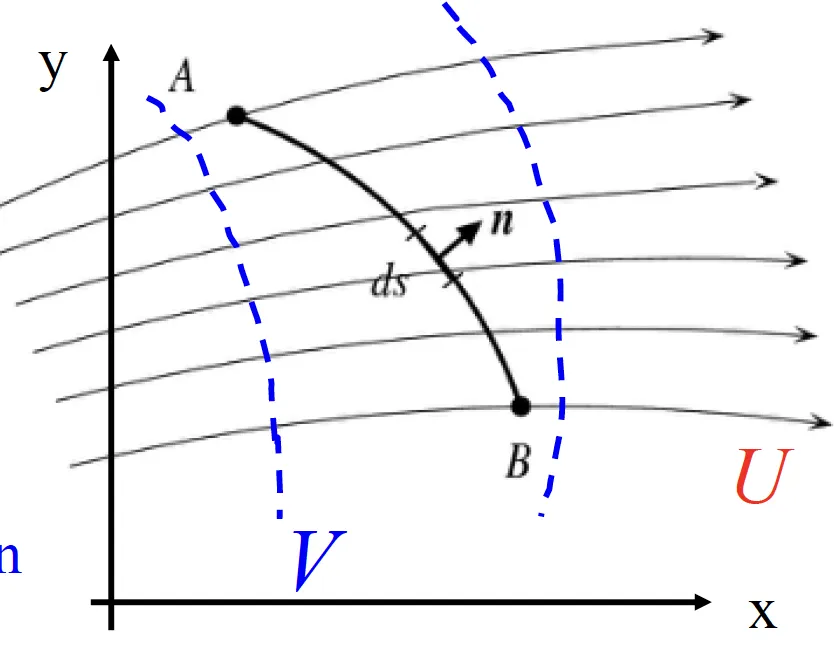
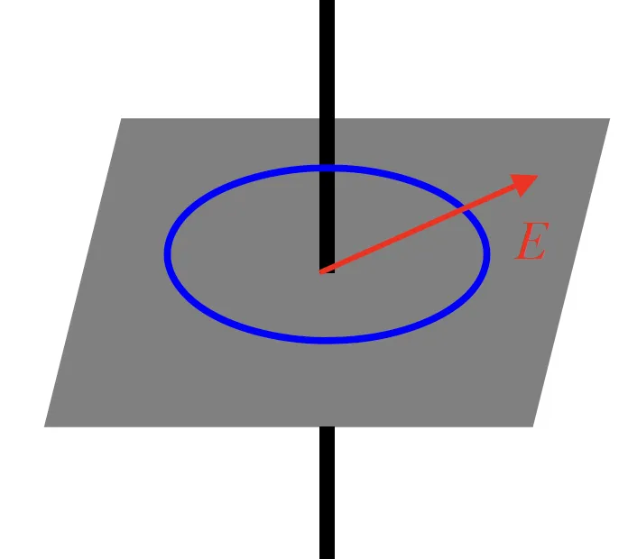
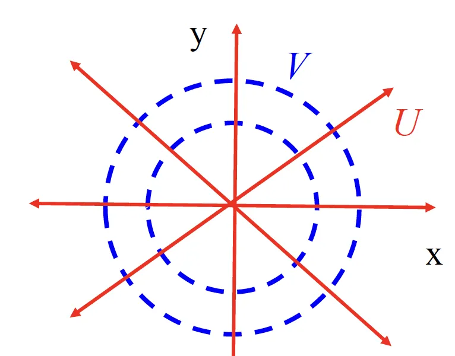
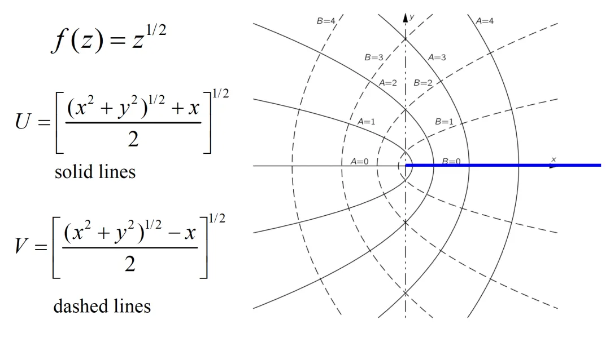
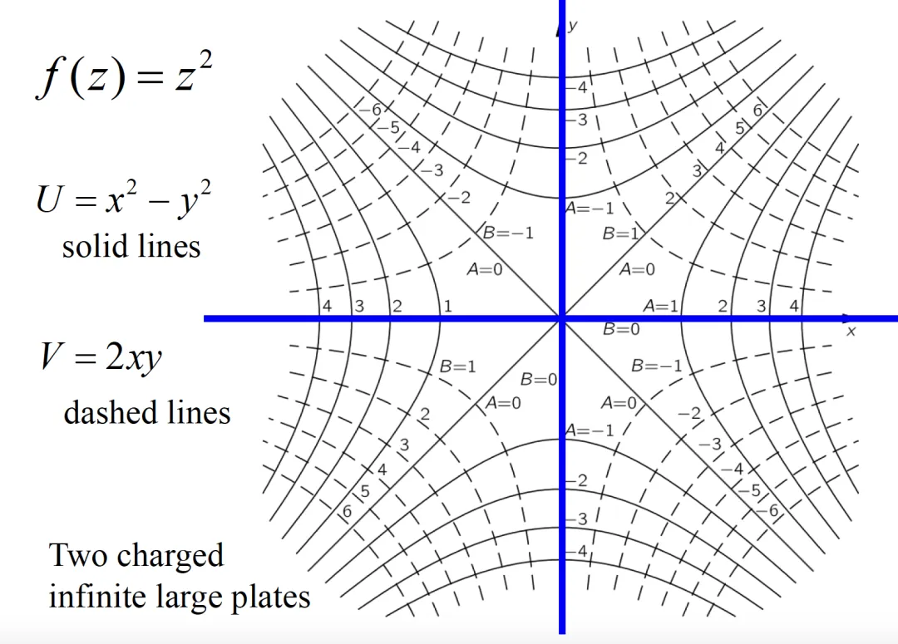
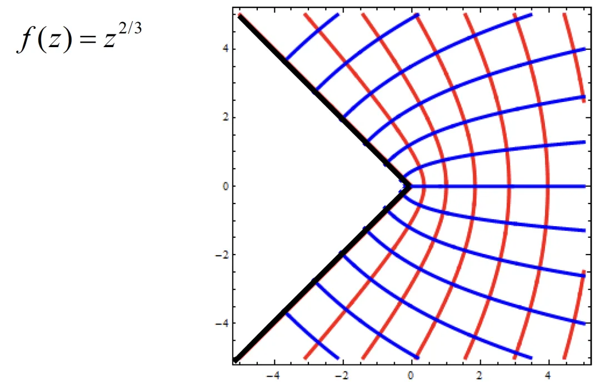

之前忘记传复变的笔记了。现在补一下，链接如下：https://cloud.tsinghua.edu.cn/f/0e002cc2dca948b7824d/
Credits: Lectures by 姚国武，24春季学期。
至于为什么突然想到了，主要是因为General Physics讲到了复势，然后讲的可以说是不敢恭维，遂补充之。
动机
首先，引入复变函数来描述电场和电势的动机是单纯的。 在我们已知电荷分布的情况下，通过电荷的积分就可以获得空间每一良定义的点的电势和电场 ： $$ \phi(1)=\int_{all space}\frac{\rho(2) dV_2}{4\pi \epsilon_0 r_{12}} $$ $$E=-\nabla \phi$$ 或者写成多级展开的形式： $$\phi(\mathbf{r}) = \frac{1}{4\pi \epsilon_0} \sum_{n=0}^{\infty} \frac{1}{r^{n+1}} \int (r’)^n P_n(\cos\alpha) \rho(r’) , d\tau' $$ 但问题是很多时候我们不知道全空间明确的电荷分布 ，比如有导体或者insulator的情况，我们不直接知道电荷在其中的分布，但是会有一些边界条件(Boundary Condition)，比如说导体构成一个等势体之类的。
Uniqueness Theorem
在体积 $V$ 内，对于已知的电荷分布 $\rho(\mathbf{x})$，如果在 $V$ 的封闭边界面 $S$ 上：
- 给定电势 $\phi|_S$ （Dirichlet 边界条件）
- 或给定电势的法向导数 $\left.\frac{\partial \phi}{\partial n}\right|_S$ （Neumann 边界条件）
那么体积 $V$ 内的电场是唯一确定的。
这里，一种很巧妙的方式是根据 Uniqueness theorem 做 镜像电荷(Image Charge)，即把做镜像电荷的区域之外的区域看成$V$，然后这部分的电荷分布没变，只要保证边界条件不变就有电场的等价性了。这从数学上和物理上都很有美感，但是并不是所有的情况都有明确的镜像电荷分布与之对应，所以我们也需要一些别的手段。
注意到，其实我们需要解的问题的通用方法其实是解这样的一组方程:
- Poisson方程 $$\nabla^2 \phi=-\frac{\rho}{\epsilon_0}$$
- 边界条件 e.g. $$\phi|_S=0$$
在一维,这是个ODE,很容易。 从二维开始,这变成了一个PDE，不好找解析解，很多时候只能求助于数值方法。 所以，有性质好的函数满足这样的方程，无疑是一件好事。复变函数（准确来说全纯函数）就是这样一种特殊情况： 二维情况下Poisson方程取$\nabla^2 \phi=0$。
但是这里有一个tricky的点，也就是说之前我们是尝试通过Poisson方程和边界条件解出对应的电场和电势，但这里干的一件事情是相反的： 即我们先给出一个复变函数，然后尝试构造以它的实部和虚部分别对应电场和电势的电荷分布 。
复变小tips
ok，插播一点复变知识：
$$f: \mathbb{C}\rightarrow\mathbb{C}$$ $$z=x+yi, f(z)=u+vi$$ 复变函数是一个从复数域到复数域的映射(或者理解成$\mathbb{R}^2$到$\mathbb{R}^2$，运算有Hermite性的映射)。
1. 导数
定义：设 $w = f(z)$ 在 $D$ 上有定义，$z_0 = x + iy \in D$，若
$$ \lim_{\Delta z \to 0} \frac{f(z_0 + \Delta z) - f(z_0)}{\Delta z} = A \in \mathbb{C} $$
（$\Delta z = \Delta x + i \Delta y$）
则 $f(z)$ 在 $z_0$ 可导，$A$ 称为 $f(z)$ 在 $z_0$ 处的导数，即 $A = f’(z_0) = \frac{df}{dz}\bigg|_{z=z_0}$。
2. 可微与微分
定义：若 $f(z)$ 在 $z_0 = x_0 + iy_0$ 可微，且 $f(z)$ 在 $z_0$ 的某个邻域 $B_\rho(z_0)$ 内有表达式
$$ \Delta f = f(z_0 + \Delta z) - f(z_0) = A \cdot \Delta z + \rho(\Delta z) \cdot \Delta z $$
其中 $A \in \mathbb{C}, \lim_{\Delta z \to 0} \rho(\Delta z) = 0$。
- 若 $A \cdot \Delta z$ 称作 $f(z)$ 在 $z_0$ 处的微分，记作 $$ df = A \cdot \Delta z \quad (= A \cdot dz) $$ Remark: 可导$\Leftrightarrow$可微
3. 解析函数
定义：$z_0 \in \mathbb{C}$，若 $w = f(z)$ 在 $z_0$ 的某个邻域 $B_\rho(z_0)$ 内处处可导，则称 $f(z)$ 在 $z_0$ 解析，$z_0$ 称为 $f(z)$ 的一个解析点。否则称 $f(z)$ 在 $z_0$ 不解析，$z_0$ 称为 $f(z)$ 的奇点。
若 $f(z)$ 在 $z_0$ 解析 $\Rightarrow f(z)$ 在整个 $B_\rho(z_0)$ 上解析。
注：解析是开集性定义。
4. 函数可导(解析)的充要条件
令$f’(z)=\alpha +i \beta$, 那么 $$ \Delta f(z)= f’(z) dz + \rho(\Delta z) dz $$
$$ = (\alpha + i\beta) (\Delta x + i\Delta y) + (\rho_1 + i\rho_2)(\Delta x + i\Delta y) $$
$$ = \alpha \Delta x - \beta \Delta y + \rho_1 \Delta x - \rho_2 \Delta y $$
$$+ i (\beta \Delta x + \alpha \Delta y + \rho_2 \Delta x + \rho_1 \Delta y)$$
因此：
$$ \Delta u = \alpha \Delta x - \beta \Delta y + \rho_1 \Delta x - \rho_2 \Delta y $$
$$ \Delta v = \beta \Delta x + \alpha \Delta y + \rho_2 \Delta x + \rho_1 \Delta y $$ 这能给我们3个结论：
- I. $$ u, v \text{在} (x, y) \text{上可微} $$
- II. Cauchy-Riemann 方程
$$\frac{\partial u}{\partial x} = \frac{\partial v}{\partial y} $$ $$\frac{\partial u}{\partial y} = -\frac{\partial v}{\partial x}$$
- III.导数公式 $$ \quad f’(z) = \alpha + i\beta = \frac{\partial u}{\partial x} - i\frac{\partial u}{\partial y} =\frac{\partial u}{\partial x} + i\frac{\partial v}{\partial x} = \frac{\partial v}{\partial y} + i\frac{\partial v}{\partial x} = \frac{\partial v}{\partial y} - i\frac{\partial u}{\partial y} $$
Remark: 注意到C-R方程蕴含$\nabla^2u=\nabla^2v=0$,即$u,v$满足Laplace方程
定理 1：
若 $w = f(z)$ 在 $z = x + iy$ 可导的充要条件是 $u, v$ 在 $(x, y)$ 点可微且满足 Cauchy-Riemann 方程。
定理 2：
若 $w = f(z) = u + iv$ 在 $D$ 上解析的充要条件是 $u, v$ 在 $D$ 上可微且处处满足 Cauchy-Riemann 方程。
5. 形式导数
$z=x+iy, \bar{z}=x-iy$ $x,y\rightarrow z,\bar{z}$是一组换基的线性变换，注意到：
$f(z)$在$D$上解析$\Leftrightarrow \frac{\partial{f(z)}}{\partial(\bar{z})}=0$ 这是另一种理解解析性的方式。
Plug it in
所以逻辑上就是这样，在很多真实场景我们关心的是$\nabla^2 \phi=0$的情况，假如说存在$z$轴上的空间对称性或者其他方式保证$\frac{\partial^2\phi}{\partial z^2}=0$, 那么剩下的$$ \frac{\partial^2\phi}{\partial x^2}+\frac{\partial^2\phi}{\partial y^2}=0$$ 就是Laplace方程，且$u,v$满足这种性质。
同时，注意到C-R方程保证$$ \frac{\partial U}{\partial x} \frac{\partial V}{\partial x} + \frac{\partial U}{\partial y} \frac{\partial V}{\partial y} = 0$$ 所以 $$ \nabla U \cdot \nabla V = 0$$ 也就是说这两组线是正交的。所以，在实际问题中，可以一组线是电场线，一组线是等势线。

比如说 $V$ 代表电势
$$ \mathbf{E} = -\nabla V = -\frac{\partial V}{\partial x} - i\frac{\partial V}{\partial y} $$
注意到在$\mathbb{C}$上内积$\mathbf{a}^T\mathbf{b} = x_1x_2 + y_1y_2 = \mathbf{R}e\left[\mathbf{z_1}\overline{\mathbf{z_2}}\right]$
所以
$$ W = - \int_A^B \mathbf{E} \cdot d\mathbf{l} = \int_A^B \left(\frac{\partial V}{\partial x} + i\frac{\partial V}{\partial y} \right){(dx-idy)} $$
$$ = \int_A^B \frac{\partial V}{\partial x} dx + \frac{\partial V}{\partial y} dy = \int_A^B dV = V(B) - V(A) $$ V is the Potential function
U is the Flux function $$ N = \int_A^B \mathbf{E} \cdot d\mathbf{S} = - \int_A^B \left( \frac{\partial V}{\partial x} + i \frac{\partial V}{\partial y} \right) (-dy - idx) $$
$$ = \int_A^B \left( \frac{\partial V}{\partial x} dy - \frac{\partial V}{\partial y} dx \right) = \int_A^B \left( \frac{\partial U}{\partial y} dy + \frac{\partial U}{\partial x} dx \right) $$
$$ = U(B) - U(A) $$
同时，注意到 $$ E = - \frac{\partial V}{\partial x} - i \frac{\partial V}{\partial y} = - \frac{\partial V}{\partial x} - i \frac{\partial U}{\partial x} = (-i) \overline{f’(z)} $$ 所以有 $$ f’(z) = (-i) \overline{E} $$
举个栗子
最后看几个例子吧
1. POC: 无穷长直导线

对于具有线电荷密度$\lambda$的无限长直线，
$$ E = \frac{\lambda}{2\pi\varepsilon_0 r^2}r $$
这是一个二维问题，
$$ E = \frac{\lambda z}{2\pi \varepsilon_0 z \overline{z}} = \frac{\lambda}{2\pi \varepsilon_0 \overline{z}} $$
$$ f’(z) = (-i) \frac{\lambda}{2\pi \varepsilon_0 z} $$ 所以 $$ f(z) = (-i) \frac{\lambda}{2\pi \varepsilon_0} \ln z $$
$$ = (-i) \frac{\lambda}{2 \pi \varepsilon_0} \ln (r e^{i\theta}) $$
$$ = \frac{\lambda}{2 \pi \varepsilon_0} \theta - i \frac{\lambda}{2 \pi \varepsilon_0} \ln r $$
其中：
$$ U = \frac{\lambda}{2 \pi \varepsilon_0} \theta \quad \text{(Flux-line)} $$
$$ V = - \frac{\lambda}{2 \pi \varepsilon_0} \ln r \quad \text{(Potential line)} $$ 
2. 更多美丽的图
  
References:
[1] The Feynman Lectures on Physics Vol.2
[2] Introduction to ElectroDynamics J. Griffiths
[3] Slides from General Physics Prof. Luyan Sun
*注：笔者在之前的文章中曾说大抵是拿不到复变的4.0的，最后托老师的仁慈（应是调分幅度不小）还是拿到了。天下还是好人多呐🐶。
有时会去想，姚班的课程中没有设置概率论、复变函数的课程，在讲到相关的内容是又往往会出现 a. 默认大家都会 b.默认大家都不会重新讲的情况(比如back-propogation已经在4门课中听过了)。或许，课业学习中的速度与系统性，类似于RL中的exploration-exploitation, Generalization Theory中的inductive bias-function complexity，铸定是一种tradeoff吧。